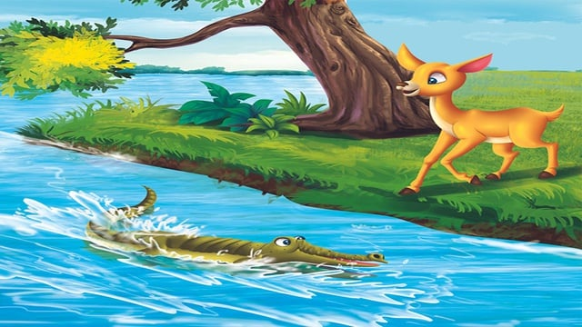

Kancil Dan Buaya
Pada suatu hari yang cerah, Si Kancil sedang berjalan-jalan di hutan untuk mencari makanan. Ia tiba di tepi sungai yang deras. Untuk mencapai padang rumput di seberang sungai, ia harus menyeberang. Namun, sungai itu dipenuhi buaya yang lapar.
Kancil yang cerdik segera mendapat ide. Ia berdiri di tepi sungai dan berseru dengan suara lantang, "Hai, Buaya! Aku membawa pesan dari Raja Hutan untuk kalian semua!"
Seekor buaya besar muncul dari udara dan bertanya, "Pesan apa, Kancil?"
Kancil menjawab, "Raja Hutan ingin mengetahui berapa jumlah kalian di sungai ini. Ia ingin memastikan apakah kalian cukup untuk menghadiri pesta besar yang akan diadakan."
Buaya yang merasa penting segera memanggil teman-temannya. Tak lama kemudian, semua buaya berkumpul.
Kancil berkata, "Agar aku bisa menghitung kalian dengan mudah, kalian harus memastikan lurus dari sini sampai ke seberang sungai."
Buaya-buaya itu setuju dan segera mendesaknya rapi di sungai. Kancil melompat ke punggung buaya pertama sambil berkata, "Satu," lalu melompat ke buaya berikutnya sambil berkata, "Dua." Ia terus melompat hingga sampai di seberang sungai.
Sesampainya di seberang, Kancil segera melompat ke darat dan tertawa, "Terima kasih, Buaya, kalian sangat membantu! Tapi sebenarnya aku hanya ingin melintasi sungai. Selamat tinggal!"
Buaya-buaya merasa tertipu, tetapi mereka tidak bisa berbuat apa-apa. Mereka hanya bisa menggeram kesal, sementara Kancil melanjutkan perjalanannya dengan santai